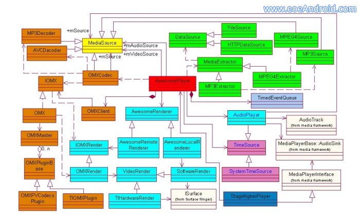

Android2.X新的多媒体框架Stagefright讨论
出现在android的新的多媒体框架Stagefright，大家可以好好讨论研究一下！！
新的多媒体框架Stagefright支持本地文件播放和网络数据流的播放，在android2.2中仍然支持OpenCore.

google在android2.X代码中增加了新的播放引擎(i.e, Stagefright)，和opencore框架相比，这种架构似乎更加直接和简明。
MediaExtractor：数据检索类。
仍然使用OMX来解码：
AwesomePlaye 是一个引擎为所有模块服务。
不过目前还在开发之中，试了一下，很多功能没完善，估计不会那么快代替opencore。